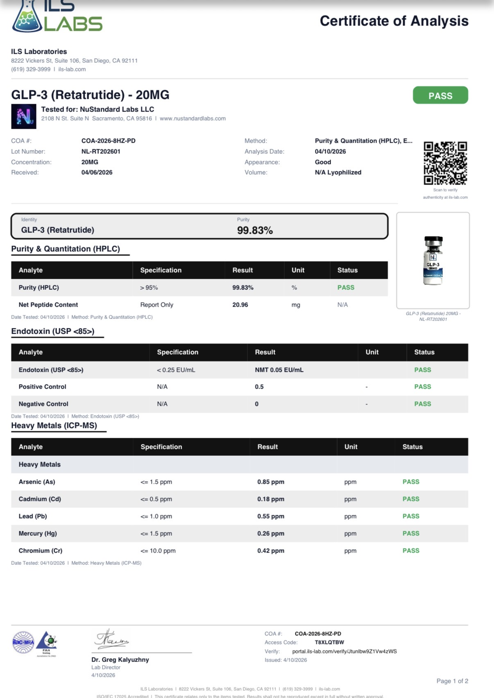

Reconstitution Calculator
Select your vial, enter your water amount, and get the exact units to draw — no guesswork.
Not sure what to enter? See the Library for compound protocols.
Stacks
Commonly used peptide combinations for specific goals.
Tissue Repair Foundation
The most widely researched starting point for injury recovery. Conservative, well-tolerated, and a good entry point for most people beginning peptide research.
BPC-157 drives localized healing — tendons, ligaments, muscle tears, and gut tissue. It works at the site of injury.
TB-500 operates systemically. It reduces inflammation, promotes cell migration to damaged areas, and improves flexibility throughout the body.
Together they address different stages of the repair cascade — local and systemic — making each compound more effective in combination than alone.
Tap a compound to calculate it · also available as a pre-made blend
TB-500: 2–5 mg · 2× weekly · SubQ
Cycle: 4–8 weeks on, 2–4 weeks off
GH Pulse Stack
A synergistic GH secretagogue pair used for body composition, deeper sleep, and overall recovery. A clean, low-side-effect starting point for growth hormone optimization.
CJC-1295 is a GHRH analog — it signals the hypothalamus to extend the GH release window, priming the pituitary for a stronger pulse.
Ipamorelin is a GHRP — it triggers the actual GH pulse from the pituitary, with minimal cortisol or prolactin elevation compared to older GHRPs.
Together they work on different receptors toward the same outcome. The combination produces significantly higher GH amplitude than either compound alone — and timed pre-sleep, they align with and amplify the body's natural nocturnal GH surge.
Tap a compound to calculate it · also available as a pre-made blend
30 min pre-sleep · fasted · SubQ
Cycle: 8–16 weeks
Immune Support Starter
A gentle, well-tolerated pairing for immune resilience. A conservative entry point for anyone researching peptides for post-viral recovery, chronic low-grade inflammation, or general immune support.
Thymosin Alpha-1 is a thymus-derived peptide that restores balanced immune function — maturing T-cells, enhancing NK-cell activity, and modulating over- or under-active immune responses toward a healthy middle.
KPV is the C-terminal tripeptide of α-MSH. It works downstream, damping NF-κB–driven inflammation at the cellular level and calming overactive innate immune signaling — especially in the gut.
Together Thymosin Alpha-1 rebuilds adaptive immune capacity while KPV quiets the inflammatory noise. Different mechanisms, same direction: a calmer, more responsive immune system.
Tap a compound to calculate it
KPV: 500 mcg–1 mg · daily · SubQ
Cycle: 4–8 weeks, reassess
Cognitive Clarity Stack
Two neuropeptides with complementary mechanisms — one for mental sharpness, one for stress and mental noise. Frequently described as focused clarity without overstimulation.
SEMAX enhances cognitive function and upregulates BDNF (brain-derived neurotrophic factor). It sharpens focus and supports memory consolidation.
SELANK is an anxiolytic peptide that reduces mental noise and stress response without sedation. It takes the edge off without dulling performance.
Together they're synergistic — SEMAX sharpens the signal, SELANK filters the noise. The combination is often more tolerable at lower doses than either compound pushed higher on its own.
Tap a compound to calculate it
1–2× daily · SubQ or intranasal
Cycle: 4–8 weeks on, 2–4 weeks off
Healing & Deep Recovery
Combines the classic tissue repair pair with a GH secretagogue pair for a complete recovery protocol. The repair compounds do the structural work; the GH peptides deepen sleep and amplify the body's nightly repair window.
BPC-157 + TB-500 form the repair foundation — BPC-157 handles localized healing while TB-500 manages systemic inflammation and cellular mobility. Together they're the most commonly run beginner repair stack.
CJC-1295 + Ipamorelin add the GH amplifier. Timed before sleep, they fire a clean GH pulse that aligns with the body's natural nocturnal surge — the window where most physical repair actually happens.
The combination is synergistic: the repair peptides create the conditions for healing during the day; the GH peptides deepen the recovery environment at night. Many users report noticeably deeper sleep and faster repair when running these together.
Flexible dosing: BPC-157 + TB-500 are available as a pre-made blend. CJC-1295 + Ipamorelin also come as a blend. You can run this entire four-compound stack using just two blended vials.
Tap a compound to calculate it · BPC+TB and CJC+Ipa each available as pre-made blends
TB-500: 2–5 mg · 2× weekly · SubQ
CJC-1295 + Ipamorelin: 200–300 mcg each · 30 min pre-sleep · SubQ (or use CJC+Ipa blend)
Cycle: 8–12 weeks
GLP-Based Recomposition
A two-mechanism approach to fat loss. GLP-class peptides drive systemic metabolic change; Tesamorelin specifically targets visceral fat. Complementary mechanisms, not overlapping ones.
Retatrutide is a GLP-3 triple agonist — it suppresses appetite, improves insulin sensitivity, and activates glucagon-driven fat mobilization simultaneously. The most potent GLP-class option currently researched.
Tirzepatide is a GLP-1/GIP dual agonist — a well-studied alternative with a strong safety track record. Better starting point for those new to GLP peptides. Use Retatrutide or Tirzepatide, not both.
Tesamorelin specifically targets visceral (belly) fat through GHRH stimulation. This is an area GLP peptides don't address as directly — making it a true complement rather than overlap.
Together they work via completely different receptor pathways, tackling fat loss from two distinct angles simultaneously.
Use Retatrutide OR Tirzepatide — not both. Tap to calculate.
OR Tirzepatide: 2.5 mg/week → titrate to 5–15 mg/week
Tesamorelin: 1–2 mg · daily · SubQ (morning)
Cycle: 12+ weeks; assess every 4 weeks
Gut Restoration Protocol
A focused gut healing stack addressing both the structural lining and the inflammatory environment. Commonly researched for leaky gut, IBD, post-antibiotic gut damage, and chronic GI inflammation.
BPC-157 is the primary gut repair agent. It regenerates mucosal lining, improves intestinal barrier integrity, and has shown consistent results for inflammatory bowel conditions. It works structurally — rebuilding what's damaged.
KPV is a potent anti-inflammatory tripeptide with specific affinity for gut tissue. It directly suppresses the cytokine cascade that drives chronic gut inflammation — targeting the immune environment that impedes healing.
Together they address the two main barriers to gut recovery: BPC-157 drives structural repair, KPV controls the inflammatory environment. Without managing inflammation, tissue repair is constantly being undone.
Tap a compound to calculate it
KPV: 200–500 mcg · daily · SubQ
Cycle: 6–12 weeks
Skin & Regeneration Stack
A three-compound protocol targeting skin quality, collagen synthesis, and cellular oxidative health. Used for anti-aging, skin laxity, post-injury repair, and overall skin tone.
GHK-Cu is the primary driver. This copper peptide stimulates collagen and elastin synthesis, improves skin laxity, and upregulates cellular repair signals across multiple tissue types.
BPC-157 supports the underlying repair environment — particularly useful for wound healing, gut-skin axis support, and general cellular regeneration that enhances GHK-Cu's effects.
Glutathione addresses oxidative stress — a major driver of skin aging and tone issues. Systemic antioxidant support protects collagen from degradation and supports healthy melanin regulation.
Together they cover collagen production, repair signaling, and oxidative protection — three distinct layers of skin health.
Tap a compound to calculate it
BPC-157: 250–500 mcg · daily · SubQ
Glutathione: 200–400 mg · 3–5× weekly · SubQ or IV
Cycle: 8–16 weeks
Four-Compound Repair Protocol
A comprehensive repair protocol used for serious injuries, post-surgery recovery, or chronic pain. This is the same compound lineup as the KLOW blend — run as separate vials for independent dose control.
BPC-157 handles localized repair signaling — tendons, ligaments, muscle, gut. It's the anchor compound in most serious healing stacks.
TB-500 manages systemic inflammation and improves cellular migration to damaged sites. Works bodywide, complementing BPC-157's local focus.
GHK-Cu stimulates collagen synthesis and connective tissue regeneration — critical for quality scar tissue, tendon strength, and skin healing over the long cycle.
KPV adds potent anti-inflammatory support with specific affinity for gut barrier integrity — helping manage the systemic inflammation that slows recovery in serious injuries.
Note: If per-compound dose control isn't critical, the KLOW blend delivers all four at a fixed ratio in a single vial — see Blends tab.
Tap a compound to calculate it · or use KLOW blend (single vial)
TB-500: 2–5 mg · 2× weekly · SubQ
GHK-Cu: 1–2 mg · daily · SubQ
KPV: 200–500 mcg · daily · SubQ
Cycle: 6–12 weeks
DELTA
A three-compound sleep and recovery protocol targeting both sleep architecture and the GH pulse that drives overnight repair. DSIP promotes deep slow-wave sleep; CJC-1295 and Ipamorelin fire a clean growth hormone pulse timed to the body's natural nocturnal surge. Used together, they don't just improve sleep — they make that sleep biologically productive.
DSIP (Delta Sleep-Inducing Peptide) is the anchor. It promotes slow-wave delta sleep — the deepest, most restorative stage — while simultaneously reducing stress hormones like ACTH and cortisol that fragment sleep and impair recovery. It works on the quality and architecture of sleep, not just its onset.
CJC-1295 + Ipamorelin activate the GH axis. Timed 30–60 minutes before sleep, they amplify the natural GH pulse that occurs in the first few hours of deep sleep — the same window DSIP is deepening. The result is a more productive repair environment: deeper sleep stage + larger GH pulse happening simultaneously.
Together they address sleep from two distinct angles — neurological (DSIP restores sleep architecture) and hormonal (CJC+Ipa amplifies the GH-driven repair that deep sleep enables). This isn't redundancy; it's layering. Neither compound does what the other does.
Optional add-on for Intermediate+: Epithalon pairs naturally with this stack via its pineal gland effects — it normalizes melatonin and cortisol rhythms that drift with age and directly supports the circadian regulation DSIP works within. Run Epithalon as a 10–20 day cycle alongside DELTA for a more comprehensive circadian reset.
Tap a compound to calculate it · CJC+Ipa available as a pre-made blend
CJC-1295 + Ipamorelin: 200–300 mcg each · SubQ · 30 min pre-sleep (same window as DSIP)
Optional: Epithalon 5–10 mg/day · SubQ · 10–20 day cycle · 1–2× per year
Cycle: 8–12 weeks core stack; Epithalon cycles independently
EPOCH
A three-compound longevity protocol targeting the core mechanisms of cellular aging. Run as a concentrated annual cycle, not a continuous daily stack. Best suited for those who have completed foundational protocols and want to address aging at the chromosomal, metabolic, and structural level simultaneously.
Epithalon is the anchor and the reason for the cycle structure. This tetrapeptide activates telomerase — the enzyme that rebuilds the protective caps on chromosome ends that shorten with every cell division. Telomere attrition is one of the most well-documented hallmarks of biological aging. Run daily for 10–20 consecutive days, then the cycle ends.
NAD+ complements Epithalon at the metabolic level. Where Epithalon works at the chromosome, NAD+ fuels the cellular machinery — sirtuins, PARPs, and the electron transport chain — that determine how well each cell actually functions with age. NAD+ can extend beyond the Epithalon cycle to support ongoing cellular energy.
GHK-Cu completes the picture structurally. This copper peptide activates over 4,000 genes involved in tissue repair and regeneration — including many that govern collagen synthesis, antioxidant defense, and the anti-inflammatory signaling that declines with age. It works at the gene expression level, reinforcing what Epithalon starts at the chromosomal level.
Together they cover three distinct angles of aging: chromosomal (Epithalon), metabolic (NAD+), and structural/gene-level (GHK-Cu). This is a complementary stack, not an overlapping one — each compound is doing something the others are not.
Tap a compound to calculate it
NAD+: 50–100 mg · daily or 4× weekly · SubQ (run throughout + beyond cycle)
GHK-Cu: 1–2 mg · daily · SubQ (run throughout + beyond cycle)
Frequency: 1–2 cycles per year · not for continuous use
Mitochondrial Stack
A three-compound protocol targeting the root causes of cellular energy decline. Aimed at longevity, fatigue reduction, and metabolic optimization. Requires sequential introduction and careful timing.
SS-31 stabilizes cardiolipin on the inner mitochondrial membrane — the structural foundation that determines how efficiently energy is produced. Start here first and run alone for 2 weeks before adding anything else.
MOTS-C is a mitochondrial signaling peptide that triggers biogenesis — the actual building of new mitochondria. Introduce after SS-31 has established the foundation. Separate injections by 4–6 hours (SS-31 is a "conservation" signal; MOTS-C drives "expansion").
NAD+ provides the redox currency the improved mitochondria need to actually produce ATP. Run throughout the full cycle — it supports the other two rather than following them sequentially.
Together they address membrane integrity, biogenesis signaling, and fuel availability — three distinct bottlenecks in mitochondrial function that must all be open for meaningful energy improvement.
Tap a compound to calculate it
Weeks 3+: Add MOTS-C · 5–10 mg · 2× weekly (4–6 hrs apart from SS-31)
NAD+: 50–100 mg · 3–5× weekly throughout
Cycle: 12 weeks on, 4 weeks off
Advanced Recomposition Stack
A four-mechanism fat loss and recomposition protocol for experienced researchers. Each compound works through a distinct pathway — systemic fat mobilization, GH-driven muscle preservation, mitochondrial efficiency, and targeted fat breakdown.
Retatrutide is the primary driver — a GLP-3 triple agonist that suppresses appetite, improves insulin sensitivity, and activates glucagon-driven fat mobilization. The most potent GLP-class peptide currently in research. Titrate very slowly.
CJC-1295 + Ipamorelin add the GH secretagogue layer. Taken pre-sleep, they fire a clean GH pulse that supports lean muscle preservation and fat metabolism during the caloric deficit Retatrutide creates. Muscle preservation matters — fat loss without it is counterproductive.
MOTS-C is the metabolic amplifier. This mitochondrial peptide improves fat oxidation at the cellular level — helping the body actually burn the mobilized fat as fuel rather than recycling it into storage.
AOD-9604 is a targeted GH fragment that selectively activates lipolytic enzymes without affecting blood glucose. It fills the gap between systemic fat mobilization (Retatrutide) and cellular fat burning (MOTS-C).
Together these four compounds address fat mobilization, muscle preservation, cellular fuel utilization, and targeted breakdown — four distinct levers pulled at once. Monitor closely; titrate each compound individually.
Tap a compound to calculate it
CJC-1295 + Ipamorelin: 200–300 mcg each · pre-sleep · SubQ
MOTS-C: 5–10 mg · 2–3× weekly · SubQ
AOD-9604: 250–500 mcg · daily · fasted · SubQ
Cycle: 12–16 weeks; assess every 4 weeks
Advanced GI Restoration
The full gut repair protocol — extending the intermediate Gut Restoration stack with systemic support and oxidative protection. For chronic GI conditions, severe leaky gut, or post-surgical gut recovery.
BPC-157 remains the anchor — the primary structural repair agent for mucosal lining, gut-blood barrier integrity, and intestinal tissue regeneration.
KPV manages the local inflammatory environment. Its specific affinity for gut tissue makes it the most targeted anti-inflammatory option for chronic GI conditions like Crohn's, colitis, or IBD.
TB-500 extends the healing network systemically. In chronic gut conditions, inflammation isn't just local — TB-500 addresses the bodywide inflammatory burden and supports cellular repair beyond the gut lining itself.
Glutathione handles the oxidative stress piece. Chronic gut inflammation generates significant reactive oxygen species that degrade tissue and impair immune regulation. Systemic antioxidant support is often the missing layer in gut restoration protocols.
Tap a compound to calculate it
KPV: 200–500 mcg · daily · SubQ
TB-500: 2–5 mg · 2× weekly · SubQ
Glutathione: 200–400 mg · 3–5× weekly · SubQ or IV
Cycle: 8–12 weeks
Advanced Immune & Inflammation Protocol
A four-compound protocol for chronic immune dysregulation, persistent low-grade inflammation, and post-viral or post-infection recovery. Each peptide works through a distinct axis — adaptive immunity, innate inflammation, tissue repair, and gene-level regulation.
Thymosin Alpha-1 is the adaptive-immunity anchor. It matures T-cells, enhances NK-cell cytotoxicity, and normalizes Th1/Th2 balance — the upstream correction that makes the rest of the stack more effective in people with blunted or dysregulated immune function.
KPV damps NF-κB–driven innate inflammation and calms overactive mast cells and macrophages. Where Ta1 tunes up the adaptive arm, KPV quiets the noisy innate arm — the two fit together cleanly.
GHK-Cu resets gene expression linked to inflammation and tissue repair. It acts as a systemic signal that shifts cells out of a chronic inflammatory pattern and toward regeneration — bridging immune modulation and structural recovery.
BPC-157 closes the loop by repairing the tissue damage chronic inflammation leaves behind — gut lining, vasculature, and connective tissue. Without it, the immune/inflammatory work happens but the downstream damage stays.
Together the stack addresses adaptive immunity, innate inflammation, gene-level signaling, and structural repair simultaneously. Introduce sequentially over 1–2 weeks per compound to isolate responses.
Tap a compound to calculate it
KPV: 500 mcg–1 mg · daily · SubQ
GHK-Cu: 1–2 mg · daily · SubQ
BPC-157: 250–500 mcg · 1–2× daily · SubQ
Cycle: 8–12 weeks, reassess
Advanced Lean Mass Protocol
Advanced only. A high-risk, high-reward hypertrophy protocol that combines direct IGF-1 receptor activation with endogenous GH amplification and tissue-repair support. Intended for experienced researchers in a dedicated mass phase — not for general use.
IGF-1 LR3 is the driver. Unlike GH secretagogues that raise IGF-1 indirectly via the pituitary-liver axis, LR3 activates the IGF-1 receptor directly and sustains that activation for roughly a day per dose. This triggers PI3K/Akt/mTOR protein synthesis and supports myocyte hyperplasia in a way endogenous GH alone cannot replicate. It also carries the most real risk in this stack (hypoglycemia, organ hypertrophy with chronic overuse, tumor-promotion concerns).
CJC-1295 + Ipamorelin provide the pulsatile GH layer — pre-sleep dosing fires a clean GH pulse that amplifies overnight recovery, lipolysis, and indirect IGF-1 production. Running both the endogenous (GH → natural IGF-1) and direct (LR3) pathways creates a stronger anabolic environment than either alone.
BPC-157 is the insurance policy. Aggressive hypertrophy often outpaces tendon and connective-tissue adaptation — BPC-157 supports tendon, ligament, and gut repair during the phase when rapid muscle growth would otherwise expose those weaker links.
Together this stack covers direct IGF-1 signaling, endogenous GH support, and structural protection. Cycle short — 4–6 weeks of IGF-1 LR3 maximum — and monitor blood glucose and IGF-1 levels if possible.
Tap a compound to calculate it · CJC+Ipa available as a pre-made blend
CJC-1295 + Ipamorelin: 200–300 mcg each · 30 min pre-sleep · SubQ
BPC-157: 250–500 mcg · 1–2× daily · SubQ
Cycle: 4–6 weeks on IGF-1 LR3, extended off; CJC+Ipa and BPC-157 can continue longer
Total Recovery Protocol
A comprehensive recovery stack covering every major axis simultaneously — tissue repair, systemic inflammation, immune modulation, collagen synthesis, and GH-amplified sleep. For serious injury recovery, post-surgery, or anyone who wants full-spectrum support and understands each compound.
BPC-157 is the repair anchor. It drives localized tissue healing — tendons, ligaments, muscle, gut — and initiates the signaling cascade that the other compounds build on.
TB-500 extends that repair work systemically. It reduces inflammation bodywide, promotes cellular migration to damaged sites, and restores mobility and flexibility in affected tissue.
KPV manages the immune environment. This anti-inflammatory tripeptide suppresses the cytokine activity that chronically disrupts healing — keeping the inflammatory response controlled so structural repair can actually complete.
GHK-Cu handles collagen synthesis and connective tissue quality. Where BPC-157 and TB-500 repair the immediate injury, GHK-Cu improves the long-term tensile strength and pliability of the tissue being rebuilt.
CJC-1295 + Ipamorelin add the GH amplifier — timed pre-sleep to fire a clean GH pulse during the body's primary repair window. Deeper sleep architecture, elevated overnight GH, and accelerated recovery signaling throughout the night.
Together this stack addresses every major bottleneck in the recovery cascade: local repair, systemic inflammation, immune regulation, connective tissue quality, and the hormonal environment that determines how aggressively the body rebuilds during sleep. Each compound earns its place.
Tap a compound to calculate it · BPC+TB and CJC+Ipa each available as pre-made blends
TB-500: 2–5 mg · 2× weekly · SubQ
KPV: 200–500 mcg · daily · SubQ
GHK-Cu: 1–2 mg · daily · SubQ
CJC-1295 + Ipamorelin: 200–300 mcg each · 30 min pre-sleep · SubQ (or CJC+Ipa blend)
Cycle: 8–12 weeks
SOVEREIGN
A five-compound deep longevity protocol targeting every major hallmark of aging that is currently addressable with peptides. Built on the EPOCH framework and extended with mitochondrial membrane support and immune system calibration. For experienced researchers who understand each compound individually and want a comprehensive annual cycle.
Epithalon anchors the cycle. It activates telomerase to rebuild telomere length — addressing chromosomal aging at its root. The 10–20 day cycle structure is dictated by Epithalon and everything else is timed around it.
NAD+ fuels the cellular machinery. Sirtuin activation, PARP-driven DNA repair, and electron transport chain efficiency all depend on adequate NAD+ — which declines significantly with age. It supports Epithalon's telomere work by ensuring the cellular environment is energetically capable of sustaining the improvements.
GHK-Cu works at the gene expression level, activating thousands of genes involved in tissue repair, collagen synthesis, and the anti-inflammatory signaling that progressively fades with age. It bridges the chromosomal work (Epithalon) and the mitochondrial work (SS-31, NAD+) at the structural and genomic level.
SS-31 goes deeper than NAD+ alone. By stabilizing cardiolipin on the inner mitochondrial membrane, it restores the structural geometry of the electron transport chain — reducing reactive oxygen species at the source rather than mopping them up downstream. SS-31 doesn't just fuel mitochondria; it fixes the machinery. This is the compound that separates SOVEREIGN from EPOCH.
Thymosin Alpha-1 addresses the most overlooked hallmark of aging: immunosenescence. As the immune system loses precision with age — blunting NK-cell activity, losing T-cell repertoire, failing to clear senescent cells — every other anti-aging intervention is undermined. Ta1 recalibrates the adaptive immune system, supporting the immune surveillance that makes every other compound in this stack more effective.
Together these five compounds cover telomere attrition, mitochondrial dysfunction, loss of proteostasis and gene regulation, and immune decline — the five most mechanistically actionable hallmarks of aging currently within reach. Each compound is doing something the others cannot. This is not a stack you build toward overnight.
Tap a compound to calculate it
NAD+: 50–100 mg · daily or 4× weekly · SubQ (run throughout + beyond cycle)
GHK-Cu: 1–2 mg · daily · SubQ (run throughout + beyond cycle)
SS-31: 2–3 mg · 3× weekly · SubQ (begin 1–2 weeks before Epithalon cycle)
Thymosin Alpha-1: 1.6 mg · 2× weekly · SubQ · 4–8 weeks around the cycle
Frequency: 1–2 full cycles per year
Peptide Library
Deep-dive profiles on each compound — discovery, mechanism, research, pairings, and typical research protocols. Click any entry to expand.
Organized by category. Each entry covers discovery, mechanism of action, available research, synergistic pairings, and a typical research protocol for reference.
Healing & Recovery
BPC-157
Body Protection Compound · tissue repair, gut, tendon
Isolated in 1991 by Predrag Sikirić and colleagues at the University of Zagreb from a protective protein found in human gastric juice. "BPC" stands for Body Protection Compound; the 15-amino-acid fragment labeled "157" has been the focus of nearly all published research since.
BPC-157 upregulates growth factor receptors — particularly VEGFR2 — driving angiogenesis (new blood vessel formation) at injury sites. It also modulates nitric oxide signaling and interacts with the dopaminergic, serotonergic, and GABAergic systems, which helps explain its gut-brain axis effects. Mechanistically it accelerates the transition from inflammation to proliferation in the wound-healing cascade.
Animal models are extensive. Staresinic et al. (2006) demonstrated accelerated Achilles tendon transection repair in rats. Cerovecki et al. (2010) and Chang et al. (2011) showed tendon-to-bone healing improvements. Klicek et al. (2013) documented gastrointestinal fistula closure. Boban-Blagaic et al. (2008) reported reversal of SSRI-induced GI damage. Additional rat studies have covered muscle laceration, ligament injury, bone defects, and traumatic brain injury.
Human data is very limited — mostly case reports and small observational series in GI conditions. No large randomized trials exist, which is the most important caveat.
TB-500 (systemic repair complement), GHK-Cu (collagen and connective tissue quality), KPV (inflammatory damping, especially in gut protocols).
250–500 mcg · 1–2× daily · subQ near the injury site or IM · 4–6 week cycles. Some protocols use a loading approach (higher end of dose range for 2 weeks, then reduce). Most commonly paired with TB-500 in a concurrent protocol.
TB-500
Thymosin Beta-4 fragment · systemic recovery
Thymosin Beta-4 (Tβ4) was first isolated from calf thymus in 1981 by Low and Goldstein. TB-500 is the synthetic C-terminal fragment of Tβ4 that carries most of its regenerative activity and became the preferred research form due to better stability.
TB-500 binds G-actin — a cytoskeletal protein involved in cell shape and migration. That binding promotes cell migration to injury sites, upregulates laminin-5, and drives angiogenesis. Unlike localized agents, it acts systemically: injected anywhere, it distributes broadly to circulate healing signals throughout the body.
Animal models are well-developed. Crockford et al. (2010) showed cardiac regeneration after myocardial infarction in mice. Sosne and colleagues published a long series on corneal epithelial repair from 2005 onward. Goldstein et al. documented dermal wound healing, and TB-500 has been widely studied in equine performance and injury recovery literature.
Human data is limited. A clinical formulation of full-length Tβ4 (RGN-259) has moved through Phase 2/3 trials for dry eye and corneal wounds, which is the closest direct human evidence.
BPC-157 (local + systemic recovery), GHK-Cu (collagen quality), KPV (for inflammation-heavy injuries).
Loading: 2–5 mg subQ 2× per week for 4 weeks. Maintenance: 500 mcg–1 mg once weekly. Typically cycled 4–6 weeks on, then reassessed. Administered anywhere on the body — it acts systemically regardless of injection site.
GHK-Cu
Copper tripeptide · skin, collagen, gene expression
Isolated from human plasma in 1973 by Loren Pickart, who observed that plasma from younger donors had regenerative effects on aged liver tissue. The active agent turned out to be a tripeptide (glycyl-histidyl-lysine) bound to copper. Plasma levels of GHK drop roughly 60% between age 20 and age 60 — the observation that launched decades of research.
GHK-Cu is a copper carrier and a transcriptional modulator. Pickart and Margolina's 2012 gene array work showed it influences expression of roughly 4,000 human genes — shifting expression patterns away from aged/damaged profiles toward healthier, regenerative ones. Downstream it stimulates collagen and elastin synthesis, upregulates decorin (tissue quality), and suppresses several inflammatory signaling pathways.
Animal and in vitro research is extensive. Maquart et al. (1988) demonstrated wound healing acceleration. Trachy et al. (1990) showed hair follicle stimulation. Pickart and colleagues have published on gene expression reset, stem cell stimulation, and skin regeneration over decades.
Human data exists primarily for topical use — multiple trials show improvements in skin firmness, wound healing, and age-related skin quality. Injectable human research is limited but clinical use is widespread.
BPC-157 and TB-500 (repair protocols), KPV and Thymosin Alpha-1 (immune/inflammation stacks). Also widely used topically alongside injectable protocols.
1–2 mg subQ 2–3× per week · 4–8 week cycles. Injectable protocols often run alongside a topical GHK-Cu product. Not typically used as a standalone — most effective as the third compound in a repair stack alongside BPC-157 and TB-500.
Immune & Anti-Inflammatory
Thymosin Alpha-1
Thymus peptide · immune modulator
Isolated from the thymus gland in 1977 by Allan Goldstein and Abraham White at Albert Einstein College of Medicine. The full 28-amino-acid sequence was synthesized in 1979, and the compound has been studied continuously since — now approved as Zadaxin in over 35 countries for chronic hepatitis B, hepatitis C, immunodeficiency, and as an adjunct in certain cancers.
Ta1 acts primarily on the adaptive immune system. It binds Toll-like receptors (particularly TLR2 and TLR9) on dendritic cells, enhances maturation of T-cells in the thymus, increases NK-cell cytotoxicity, and helps balance Th1/Th2 polarization. The net effect is immune normalization — it restores function in blunted immune systems without overactivating healthy ones, which is why it's described as a modulator rather than a stimulator.
Human clinical evidence is unusually robust for a peptide. Andreone et al. (2001) and Sherman et al. (1998) documented efficacy in chronic hepatitis B and C. A meta-analysis by Wu et al. (2013) found Ta1 reduced mortality in severe sepsis. More recently, Liu et al. (2020) and related ICU studies reported reduced mortality in severe COVID-19 when Ta1 was added to standard care — including reversal of T-cell exhaustion.
Additional trials cover melanoma adjunct therapy, vaccine response in the elderly, and chronic immune deficiency. The body of evidence is larger than almost any other research peptide.
KPV (adaptive + innate immune coverage), GHK-Cu (gene-level anti-inflammatory support), BPC-157 (tissue repair in chronic inflammatory conditions).
1.5 mg subQ 2× per week · 4–8 weeks · typically dosed in the morning. Dosing mirrors the Zadaxin clinical protocol. Immunosuppressed or post-illness protocols may run longer under clinical guidance.
KPV
α-MSH C-terminal tripeptide · anti-inflammatory, gut
KPV (Lys-Pro-Val) is the C-terminal tripeptide of α-melanocyte-stimulating hormone (α-MSH). Researchers in the 1990s and early 2000s characterized it as the anti-inflammatory "active site" of the larger hormone — it retains most of the anti-inflammatory activity of α-MSH without the pigmentation and cardiovascular effects of the full peptide.
KPV inhibits NF-κB, the master regulator of inflammatory gene transcription. That suppresses pro-inflammatory cytokines (TNF-α, IL-1β, IL-6) and calms overactive macrophages and mast cells. Critically, KPV is transported into cells via PepT1 — a peptide transporter heavily expressed in the gut — which concentrates its effect on intestinal epithelium and makes it particularly useful for GI inflammation.
Animal and in vitro work is the primary evidence base. Kannengiesser et al. (2008) demonstrated colitis reduction in mouse models. Dalmasso et al. (2008) showed targeted nanoparticle delivery of KPV was highly effective in experimental IBD. Multiple papers have documented effects in skin inflammation, ocular inflammation, and joint models.
Human research is limited to early-stage work and off-label clinical use, primarily in IBD and chronic inflammatory conditions. The mechanistic case is strong; the formal clinical trial base is still developing.
BPC-157 (gut repair protocols — the two are highly complementary), Thymosin Alpha-1 (immune dysregulation), GHK-Cu (broad anti-inflammatory stacks).
100–500 mcg subQ 1–2× daily · 4–6 weeks. For GI-focused protocols, some researchers use oral suspension to route delivery directly through the gut wall via PepT1. Typically paired with BPC-157 in gut restoration stacks.
Growth Hormone Axis
CJC-1295
GHRH analog · long half-life with DAC
Developed by ConjuChem in the early 2000s. The Drug Affinity Complex (DAC) version was published in Teichman et al. (2006) — a GHRH analog modified to covalently bind serum albumin, dramatically extending its half-life from minutes to roughly a week. Most research peptide sources today sell the non-DAC "Mod GRF 1-29" version, which is shorter-acting but otherwise similar.
CJC-1295 is a GHRH (growth hormone-releasing hormone) analog. It binds pituitary GHRH receptors and extends the window during which the pituitary will release GH. It doesn't force a pulse — it primes the system. That's why it's typically paired with a GHRP like Ipamorelin, which fires the actual pulse.
Teichman et al. (2006) demonstrated dose-dependent increases in GH and IGF-1 in healthy adults with the DAC version, with a reasonable safety profile in short-term trials. Most other research is in livestock and animal models. Long-term human safety data is limited, which is the primary caveat for extended use.
Ipamorelin — the pairing is synergistic and is the standard GH secretagogue protocol. Both are typically dosed pre-sleep to amplify the natural nocturnal GH surge.
Non-DAC (Mod GRF 1-29): 100 mcg subQ nightly, 15–30 min before sleep · paired with Ipamorelin. DAC version: 1–2 mg 1–2× per week subQ. Most protocols run 3–6 months continuously. Always combined with a GHRP.
Ipamorelin
Selective GHRP · clean GH pulse
Developed by Novo Nordisk and published by Raun et al. (1998). Designed specifically as a cleaner GHRP — one that delivered the growth hormone release of older compounds like GHRP-6 without their side effects (hunger, prolactin and cortisol spikes).
Ipamorelin is a selective ghrelin receptor (GHS-R) agonist. It triggers a pituitary GH pulse with minimal effect on cortisol, prolactin, or ACTH — which is what differentiates it from the earlier GHRP generation. It works synergistically with GHRH analogs (CJC-1295, Sermorelin) because the two pathways converge on GH release through different mechanisms.
Raun et al. (1998) demonstrated clean GH release in rats and humans. Subsequent trials have examined post-operative ileus and gastrointestinal motility. Longer-term body composition and safety data in healthy adults is limited — most formal research focused on the GH-release pharmacology.
CJC-1295 or Sermorelin — the GHRP + GHRH pairing is the foundation of most GH secretagogue protocols. Also paired with Tesamorelin in more advanced protocols for stronger GH amplitude.
100–200 mcg subQ pre-sleep nightly · paired with CJC-1295 or Sermorelin · 3–6 months. Best dosed fasted (2+ hours post-meal) to avoid blunting the GH pulse with elevated insulin. Considered the cleanest GHRP option for extended protocols.
Sermorelin
GHRH(1-29) · the original GHRH therapeutic
The 29-amino-acid N-terminal fragment of endogenous GHRH. Approved by the FDA in 1997 as Geref for pediatric growth hormone deficiency, making it one of the few GH secretagogues with a long regulatory history.
Sermorelin binds pituitary GHRH receptors and triggers endogenous pulsatile GH release — essentially the same mechanism the body uses naturally. Because it respects the body's feedback loops, it carries a lower risk of receptor desensitization or HPA disruption than exogenous GH. Half-life is short (~10 minutes), so dosing is typically pre-sleep to align with natural GH rhythms.
Extensive pediatric GHD literature supported FDA approval. Adult off-label use for age-related GH decline has smaller clinical evidence — primarily Walker et al. and related groups showing improved IGF-1, sleep quality, and body composition markers in older adults over 6–12 months of use.
Ipamorelin (GHRH + GHRP synergy — similar logic to CJC-1295 + Ipamorelin but with a shorter GHRH duration).
200–300 mcg subQ pre-sleep nightly · paired with Ipamorelin · 3–6 months. Short half-life means timing matters — dose 15–30 min before sleep, fasted. More commonly prescribed in clinical longevity settings than most GH secretagogues due to its FDA approval history.
Tesamorelin
Stabilized GHRH · visceral fat, cognition
FDA-approved in 2010 as Egrifta for HIV-associated lipodystrophy (abnormal visceral fat accumulation in HIV patients on antiretroviral therapy). A modified GHRH(1-44) with an N-terminal trans-3-hexenoyl group that dramatically improves stability and half-life.
Like other GHRH analogs, Tesamorelin drives endogenous pulsatile GH release from the pituitary. Its distinguishing feature is efficacy — it produces larger, more sustained GH/IGF-1 increases than Sermorelin and has the cleanest human trial record for visceral fat reduction specifically.
Falutz et al. (2007, 2008, 2010) established efficacy for visceral adiposity reduction in HIV populations across multiple Phase 3 trials. Stanley et al. (2014) reported cognitive improvements (verbal memory, executive function) in older adults with age-related cognitive decline. Subsequent work has documented liver fat reduction in NAFLD. Among research peptides, Tesamorelin's human evidence base is among the strongest.
Often used alone given its potency. Can be paired with Ipamorelin for stronger pulse amplitude, though this is less necessary than with shorter-acting GHRHs.
2 mg subQ nightly · typically used as monotherapy given its potency · 6–12 months for body composition goals. Based on the Egrifta clinical dosing. Can be run longer than most peptides given its regulatory track record.
Hexarelin
Potent GHRP · strong pulse, cardioprotective
Developed by Romano Deghenghi's group in the 1990s as a modified hexapeptide analog of GHRP-6 — specifically engineered for stronger GH-releasing activity and better oral/intranasal bioavailability than first-generation GHRPs.
Hexarelin is a ghrelin receptor (GHS-R) agonist — the same receptor Ipamorelin targets — but it produces a markedly larger GH pulse. It also binds CD36, a scavenger receptor on cardiac tissue, giving it direct cardioprotective effects independent of GH release. The tradeoff: Hexarelin is the GHRP most prone to tachyphylaxis — receptor desensitization with continuous use — so it's typically cycled aggressively rather than run long-term.
Locatelli et al. (1994) and Imbimbo et al. (1994) established potent GH release in animal and human studies. Torsello et al. (2003) and follow-up work by Broglio and Ghigo documented independent cardioprotective effects — reduced ischemia-reperfusion damage via CD36, not GH. Desensitization with chronic use has been well-characterized, limiting long-duration protocols.
CJC-1295 or Sermorelin (GHRH + potent GHRP for maximum pulse). Cycled use only — typically 2–4 weeks on, extended off, to avoid receptor desensitization.
100–200 mcg subQ 1–2× daily · 2–4 week cycles with extended off period · do not use continuously. Typically paired with a GHRH analog. Treat this as a blast compound, not a foundation compound — time off should equal or exceed time on.
IGF-1 LR3 Advanced only
Long-Arg3 IGF-1 · direct growth factor, not for beginners
Developed in the late 1980s by Francesco and colleagues as a modified IGF-1 analog initially intended for cell culture research. It acquired its name from its two structural changes: a 13-amino-acid N-terminal "Long" extension and an arginine ("Arg") substitution at position 3 of the native IGF-1 sequence. Those small changes transformed the molecule's pharmacokinetics dramatically.
Native IGF-1 circulates almost entirely bound to IGF-binding proteins (IGFBP-1 through -6), which protect it but also restrict when and where it acts. The Arg3 substitution disrupts binding to IGFBP-3 (the dominant carrier), leaving LR3 largely free in circulation. The N-terminal extension extends half-life from roughly 12 minutes (native IGF-1) to approximately 20–30 hours. The net effect: sustained, unrestricted IGF-1 receptor activation — driving the PI3K/Akt/mTOR pathway for protein synthesis, muscle hypertrophy, and hyperplasia (increased muscle cell count, not just size).
The compound was never developed for human therapeutic use, so formal human clinical trials don't exist. Native IGF-1 (Mecasermin/Increlex) is FDA-approved for severe primary IGF-1 deficiency and provides the closest translational evidence base. Animal studies show potent lean mass increases with LR3 (Tomas et al. 1992; Bailey et al. 1993). Its use in performance contexts is informed primarily by this preclinical work, native IGF-1 clinical data, and decades of off-label user experience — which is not the same as validated safety data.
Hypoglycemia — IGF-1 receptors have structural overlap with insulin receptors; large doses can cause significant blood glucose drops. Have fast carbs available.
Organ hypertrophy — IGF-1 drives growth in all tissues with IGF-1 receptors, not just muscle. Chronic high doses have been associated with gut wall thickening, cardiac hypertrophy, and visceral growth. Cycles should be short (4–6 weeks), not continuous.
Tumor promotion concerns — elevated IGF-1 signaling is a growth signal to any existing cancerous or precancerous tissue. This is an absolute contraindication for anyone with cancer history or elevated cancer risk.
CJC-1295 + Ipamorelin (endogenous GH pulse alongside direct IGF-1 signaling — the canonical advanced hypertrophy combination). BPC-157 supports tendon and connective tissue repair during aggressive hypertrophy phases, which often lag behind muscle growth. Not paired with other growth-heavy compounds given cumulative risk.
40–100 mcg subQ or IM post-workout · 4–6 week cycles maximum, not continuous · start at 20–40 mcg to assess tolerance. Dose in mcg (not mg). Have fast-acting carbs on hand for the first several doses. Never exceed 6 weeks. Extended cycles substantially increase organ hypertrophy and other risks.
Mitochondrial & Longevity
Epithalon
Synthetic tetrapeptide · telomere elongation & pineal regulation
Developed by Vladimir Khavinson and colleagues at the St. Petersburg Institute of Bioregulation and Gerontology in the 1980s as a synthetic analog of Epithalamin — a natural peptide extract from the bovine pineal gland. Khavinson's group spent decades studying its effects on aging and longevity in both animal models and human trials, publishing extensively in Russian literature before it gained wider Western attention.
Epithalon activates telomerase — the enzyme responsible for adding protective telomere sequences to chromosome ends. Telomere shortening is one of the most well-characterized hallmarks of cellular aging; by stimulating telomerase, Epithalon may slow or partially reverse this process. It also regulates melatonin and cortisol production via the pineal gland, normalizing circadian hormone rhythms that drift with age. Additionally, it appears to reduce lipid peroxidation and improve antioxidant enzyme activity.
Khavinson et al. demonstrated telomerase activation and telomere elongation in human somatic cells in culture (2003). Animal studies showed increased median and maximum lifespan in mice and rats. A long-term human study followed elderly patients treated with Epithalon over several years and reported reduced cardiovascular events and improved biomarkers. The research base is substantial but heavily concentrated in Russian institutions — independent Western replication remains limited, though interest has grown significantly.
NAD+ (complementary longevity mechanisms — telomere support + sirtuin activation), GHK-Cu (tissue regeneration + gene expression regulation), Thymosin Alpha-1 (immune resilience for a comprehensive anti-aging protocol). Typically used in concentrated 10–20 day cycles rather than continuous dosing.
5–10 mg/day subQ · 10–20 consecutive days · 1–2 cycles per year. This concentrated-cycle approach reflects Khavinson's original protocols. Some researchers split the dose (morning/evening). Not a daily continuous compound — the cycle-and-rest structure is central to its mechanism.
MOTS-C
Mitochondrial-derived peptide · metabolic regulator
Identified by the Cohen lab at USC in 2015 (Lee et al.) as the first known mitochondrial-derived peptide — encoded in the mitochondrial 12S rRNA gene rather than the nuclear genome. Its existence rewrote assumptions about what mitochondria produce beyond energy.
MOTS-C activates AMPK — the cell's master energy-sensing kinase. Downstream effects include enhanced glucose uptake (independent of insulin), increased fatty acid oxidation, and improved metabolic flexibility. Endogenous MOTS-C levels decline sharply with age and with metabolic disease, which has positioned it as a candidate exercise-mimetic and longevity peptide.
Lee et al. (2015) demonstrated improved insulin sensitivity, exercise capacity, and metabolic profiles in aged mice. Reynolds et al. (2021) characterized the exercise-mimetic profile and showed training-like adaptations in sedentary animals. Human trials are early-stage but actively underway — CohBar and other groups have moved analogs into Phase 1/2 development.
SS-31 (membrane-level complement to biogenesis signal), NAD+ (provides the redox substrate for AMPK-driven metabolism). The SS-31 → MOTS-C → NAD+ stack is the canonical "mitochondrial" protocol.
5–10 mg subQ 3–5× per week · typically dosed in the morning given its exercise-mimetic profile. Pairs well with SS-31 and NAD+ for a comprehensive mitochondrial stack.
SS-31 (Elamipretide)
Cardiolipin-targeting peptide · mitochondrial membrane
Developed by Hazel Szeto and Peter Schiller around 2004 as part of a series of cell-penetrating antioxidant peptides. Stealth Biotherapeutics licensed it as Elamipretide and has moved it through multiple late-stage clinical trials for mitochondrial disease.
SS-31 is a cationic tetrapeptide that concentrates selectively on the inner mitochondrial membrane by binding cardiolipin — a phospholipid that holds the electron transport chain in its proper cristae geometry. Stabilizing cardiolipin restores efficient ETC organization, reduces electron leak, and lowers reactive oxygen species production at the source rather than mopping them up downstream.
Human clinical trials are unusually advanced for this class. Sabbah et al. (2016) showed improvements in heart failure patients. Karaa et al. (2020) reported vision improvements in Leber hereditary optic neuropathy. Phase 3 trials have covered primary mitochondrial myopathy and Barth syndrome with mixed but informative results. Preclinical work covers ischemia-reperfusion injury, kidney disease, and neurodegeneration.
MOTS-C (SS-31 stabilizes the existing machinery; MOTS-C builds new machinery), NAD+ (redox substrate for the stabilized ETC). Typically introduced first in a mitochondrial stack to establish the membrane foundation.
1–4 mg subQ daily or every other day · typically introduced first in mitochondrial stacks. Usually run continuously while other stack compounds cycle around it.
NAD+
Coenzyme · redox currency, sirtuin substrate
Identified by Arthur Harden and William Young in 1906 as a "coferment" required for yeast fermentation — the first coenzyme ever characterized. A century of work has since established it as fundamental to virtually all cellular energy metabolism and a central molecule in aging research.
NAD+ is an electron carrier in the mitochondrial electron transport chain and the required substrate for sirtuins (SIRT1–SIRT7), PARPs (DNA repair), and CD38. Cellular NAD+ levels decline substantially with age, and that decline impairs mitochondrial function, DNA repair, and circadian signaling. Injectable NAD+ delivers the intact molecule directly rather than relying on precursor conversion.
The underlying biology is extensively characterized across thousands of papers. Precursor trials (NMN, NR) have shown raised blood NAD+ levels and some metabolic benefits in human trials. Direct subcutaneous/IV NAD+ has less formal trial data but a long history of clinical use in addiction medicine and increasingly in longevity clinics. The gap between mechanistic strength and formal trial coverage is the main caveat.
SS-31 and MOTS-C (complete mitochondrial stack — NAD+ provides the fuel for improved ETC function), Glutathione (redox + antioxidant synergy).
50–100 mg subQ or IM weekly or as needed. IV protocols in clinical settings range from 250–1000 mg over several hours. SubQ is more practical for ongoing research. IV often causes a characteristic "flush" sensation that subQ largely avoids.
Glutathione
Tripeptide · master intracellular antioxidant
Characterized by Frederick Gowland Hopkins in 1921 as a thiol-containing tripeptide of glutamate, cysteine, and glycine. Decades of subsequent work established it as the primary intracellular antioxidant in essentially every human cell and a central cofactor in phase II liver detoxification.
Glutathione works through its active thiol (-SH) group, directly neutralizing reactive oxygen species and serving as the substrate for glutathione peroxidases (GPx) and glutathione-S-transferases (GST) — enzymes responsible for clearing peroxides and conjugating toxins for excretion. Intracellular levels drop under oxidative stress, chronic inflammation, alcohol exposure, acetaminophen toxicity, and normal aging. Injectable/IV glutathione bypasses the GI breakdown that limits oral absorption.
Sechi et al. (1996) reported symptom improvement in Parkinson's disease with IV glutathione. Honda et al. (2017) documented ALT improvements in NAFLD patients with oral glutathione, and IV protocols have small-scale trial support for oxidative conditions. In dermatology, multiple trials have examined IV glutathione for skin lightening with variable results. Subcutaneous dosing is widely used clinically but has less formal trial coverage than IV.
NAD+ (redox/antioxidant synergy), mitochondrial stacks generally, and recovery/detox protocols following high-stress or high-training phases.
200–600 mg subQ 2–3× per week, or IV push under clinical oversight. SubQ is more accessible for ongoing use. Pairs well with NAD+ — many researchers dose both together on the same schedule.
Metabolic & Body Composition
Retatrutide
GLP-1 / GIP / glucagon triple agonist
Developed by Eli Lilly; entered Phase 2 clinical trials around 2022. Built on the GLP-1/GIP dual agonist framework pioneered by Tirzepatide, with a third activity added at the glucagon receptor.
Retatrutide is a single molecule that activates all three receptors: GLP-1 (appetite suppression, insulin sensitivity), GIP (insulin response, fat metabolism), and glucagon (increased energy expenditure, hepatic fat mobilization). The glucagon arm is what differentiates it — it adds thermogenic and lipolytic activity on top of the appetite-suppression effects of the GLP-1/GIP duo.
Jastreboff et al. (NEJM 2023) reported the Phase 2 trial: approximately 24% body weight loss at 48 weeks at the highest dose in adults with obesity — the largest reduction of any GLP-class agent to that point. Additional trials have documented hepatic fat reduction in NAFLD. Phase 3 trials are ongoing. Titrate slowly; GI side effects are dose-limiting.
CJC-1295 + Ipamorelin (muscle preservation during aggressive fat loss), MOTS-C (improved cellular fuel utilization), AOD-9604 (targeted lipolysis).
Start 0.5 mg subQ weekly for 4 weeks, then titrate up slowly · typical maintenance 4–8 mg weekly · long-term protocol. Slower titration reduces GI side effects significantly. Monitor for nausea — the primary dose-limiting factor.
Tirzepatide
GLP-1 / GIP dual agonist · FDA approved
Developed by Eli Lilly; FDA-approved in 2022 as Mounjaro for type 2 diabetes, and subsequently as Zepbound for chronic weight management. The first dual GLP-1/GIP agonist to reach market.
A single peptide that activates both GLP-1 and GIP receptors. GLP-1 suppresses appetite, slows gastric emptying, and improves insulin secretion. GIP enhances insulin response and influences fat storage — and the combination appears more effective than either alone for body composition.
The SURPASS trials (type 2 diabetes) and SURMOUNT trials (obesity) established efficacy and safety across large populations. SURMOUNT-1 reported roughly 21% body weight loss at the highest dose at 72 weeks. Real-world and subgroup data continue to accumulate given approval status.
CJC-1295 + Ipamorelin (muscle preservation during fat loss), AOD-9604 (targeted fat mobilization on top of systemic effect).
Start 2.5 mg subQ weekly for 4 weeks, titrate by 2.5 mg increments every 4 weeks as tolerated · maintenance 5–15 mg weekly. Most researchers find 5–10 mg the sweet spot for efficacy vs. GI side effects.
Semaglutide
Long-acting GLP-1 agonist · FDA approved
Developed by Novo Nordisk as the successor to liraglutide. FDA-approved in 2017 as Ozempic for type 2 diabetes and in 2021 as Wegovy for chronic weight management. The molecule is engineered for once-weekly dosing via fatty-acid acylation that binds serum albumin and resists DPP-4 degradation.
Semaglutide is a GLP-1 receptor agonist. It suppresses appetite at hypothalamic centers, slows gastric emptying (which prolongs satiety), improves glucose-dependent insulin secretion, and reduces glucagon release. Unlike the dual/triple agonists that followed it, Semaglutide is single-receptor — simpler pharmacology, extensive safety data, but lower peak efficacy for weight loss than Tirzepatide or Retatrutide.
The SUSTAIN trials established efficacy and safety in type 2 diabetes. The STEP program (STEP-1 through STEP-5) documented roughly 15% body weight loss at 68 weeks in adults with obesity. The SELECT trial (2023) showed reduced major adverse cardiovascular events in overweight/obese patients with established cardiovascular disease — a landmark finding that extended the indication beyond metabolic effects.
CJC-1295 + Ipamorelin (lean mass preservation during caloric deficit), MOTS-C (cellular metabolic support), AOD-9604 (targeted lipolysis).
Start 0.25 mg subQ weekly for 4 weeks, then 0.5 mg · titrate by 0.5 mg increments · maintenance 1–2.4 mg weekly. The slow titration is not optional — it substantially reduces nausea and GI adverse events.
AOD-9604
GH fragment (177–191) · targeted lipolysis
Developed at Monash University in the 1990s as a modified C-terminal fragment of human growth hormone (residues 177–191). The goal was to isolate GH's fat-burning activity from its growth and insulin-sensitivity effects.
AOD-9604 selectively activates hormone-sensitive lipase and enhances fat oxidation without binding the GH receptor at meaningful levels. That means it doesn't raise IGF-1, affect blood glucose, or produce the growth effects of full-length GH — it isolates the lipolytic activity. Most effective in fasted state.
Heffernan et al. (2001) documented fat mass reduction in mouse models. Human Phase 2 trials showed modest and variable weight loss effects — not on the scale of GLP-class agents — which has positioned AOD-9604 as a supporting compound rather than a primary fat-loss agent in most modern protocols.
Retatrutide or Tirzepatide (targeted lipolysis on top of systemic appetite suppression), MOTS-C (cellular fat oxidation support), CJC-1295 + Ipamorelin.
250–300 mcg subQ fasted · 5 days on / 2 days off. Best administered in the morning before eating for maximum lipolytic effect. Most effective when layered onto a GLP-class protocol for additive lipolytic coverage.
5-Amino-1MQ
NNMT inhibitor · metabolic flexibility
A small-molecule inhibitor developed in the mid-2010s at the University of Texas Southwestern (Neelakantan et al.) as a tool to probe NNMT — nicotinamide N-methyltransferase — an enzyme overexpressed in adipose and liver tissue in obesity and metabolic disease. Technically a small molecule rather than a peptide, but commonly used alongside peptide protocols for its metabolic effects.
5-Amino-1MQ inhibits NNMT. Normally NNMT consumes methyl groups (SAM) and nicotinamide (an NAD+ precursor) to produce 1-methylnicotinamide. Blocking it raises cellular SAM and NAD+, shifts adipocytes toward fat oxidation, and improves metabolic flexibility. Effectively, it un-throttles the NAD+ salvage pathway in fat tissue specifically.
Neelakantan et al. (2018, 2019) showed reduced adipose mass and improved glucose handling in diet-induced obese mice without calorie restriction. Additional preclinical work covers NAFLD and sarcopenia. No human clinical trial data exists — this is an early-stage research compound with a strong mechanistic case but no translational evidence yet.
Theoretical stacks with MOTS-C and NAD+ (converging on NAD+ availability and AMPK activation) or GLP-class agents (independent mechanism, potential additive fat loss). Pairings are mechanistic rather than trial-validated.
100–200 mg oral 1–2× daily · typically capsule form (no established injectable protocol). Early-stage compound with no validated human dosing — this range is extrapolated from preclinical work. Treat as exploratory.
SLU-PP-332
ERR agonist · exercise mimetic (research only)
Developed at Saint Louis University by Thomas Burris's lab as a pan-agonist of the estrogen-related receptors (ERRα, ERRβ, ERRγ). Published in 2023 and widely covered as a potential "exercise-in-a-pill" mimetic. Technically a small molecule, not a peptide — included here because it's frequently discussed alongside metabolic peptides.
ERRs are transcription factors that govern mitochondrial biogenesis, oxidative phosphorylation, and fatty-acid oxidation in skeletal muscle. Exercise upregulates their activity. SLU-PP-332 activates them pharmacologically, driving the same gene-expression program — increased mitochondrial content, oxidative fiber-type shift, and enhanced endurance capacity — without the physical work of training.
Billon et al. (2023) reported that SLU-PP-332 increased running endurance in mice by roughly 70% and produced significant fat loss in diet-induced obesity models without changes in food intake or physical activity. No human data exists. Safety, dosing, and long-term effects in humans are entirely unknown. Strictly experimental.
Theoretical synergy with MOTS-C (converging on mitochondrial biogenesis) and SS-31 (membrane stabilization of newly built mitochondria). Pairings are entirely hypothesis-level given the absence of human trials.
No established human protocol — strictly early research. Mouse study dosing was ~30 mg/kg injected; human extrapolation is unknown and should not be attempted. Included for reference only.
Cognitive & Neurological
Selank
Anxiolytic heptapeptide · GABA / BDNF modulator
Developed in Russia in the 1990s at the Institute of Molecular Genetics and the Zakusov Institute of Pharmacology. Designed as a stable synthetic analog of tuftsin — an endogenous immunomodulatory peptide — with modifications aimed at anxiolytic activity.
Selank modulates GABA-A signaling (similar direction to benzodiazepines but without the receptor binding or dependence profile), influences serotonergic tone, and increases BDNF expression. The net effect is anxiolytic without sedation — it takes the edge off without dulling cognition or causing tolerance.
Russian clinical trials (Medvedev, Zozulya and colleagues through the 2000s) documented efficacy in generalized anxiety disorder with a favorable side-effect profile. Preclinical work has covered memory enhancement, stress resilience, and immunomodulation — including intranasal influenza models. Western trial data is sparse, which is the main caveat.
Semax — the classic pairing; Semax sharpens cognition while Selank calms reactivity, producing focused clarity rather than stimulation.
250–500 mcg subQ or intranasal 1–2× daily · intranasal onset is faster (5–10 min) vs. subQ (15–30 min) · 2–4 week cycles or as needed. Paired with Semax for the classic cognitive stack. Does not appear to cause tolerance or dependence in available data.
Semax
ACTH(4-10) analog · neurotrophic, focus
Developed in the Soviet Union in the 1980s by Ashmarin and colleagues at Moscow State University. Based on the ACTH(4-10) fragment, modified to strip out hormonal (cortisol-stimulating) activity while preserving the neurotropic effects. Approved in Russia for stroke recovery and other neurological conditions.
Semax upregulates BDNF and NGF — neurotrophic factors tied to neuroplasticity and cognition. It also modulates dopaminergic and serotonergic tone. Effects are typically described as sharper focus, better memory consolidation, and improved mental stamina, without the crash profile of classical stimulants.
Russian clinical trials documented improved recovery after ischemic stroke when Semax was added to standard care, and it has regulatory approval there for that indication. Additional trials cover ADHD, optic nerve conditions, and cognitive performance. As with Selank, the Western randomized trial base is thin and is the primary caveat.
Selank — the Semax (signal) + Selank (noise reduction) combination is the standard cognitive stack.
300–600 mcg intranasal or subQ daily · often cycled 2 weeks on, 1 week off. Intranasal has direct CNS access via the olfactory route — the preferred route for cognitive effect. SubQ is an alternative when intranasal administration isn't practical.
DSIP
Delta Sleep-Inducing Peptide · sleep, stress
Isolated in 1977 by Marcel Monnier and Guido Schoenenberger at the University of Basel. The peptide was identified in cerebral venous blood of rabbits during electrically-induced delta-wave sleep — hence the name. It's a nine-amino-acid sequence that has remained somewhat enigmatic: clearly bioactive, but with a mechanism that still isn't fully characterized.
DSIP's exact molecular targets are not fully mapped. Evidence points to modulation of GABAergic tone, influence on hypothalamic-pituitary signaling (ACTH and GH), and interaction with opioid systems. Effects reported include promotion of slow-wave sleep architecture, attenuation of stress responses, and blunting of opioid withdrawal symptoms. It is not a sedative in the classical sense — it shifts sleep toward deeper phases rather than inducing drowsiness.
Small human studies from the 1980s (Schneider-Helmert, Kaeser) reported improvements in chronic insomnia, stress-related sleep disturbance, and opioid/alcohol withdrawal. Animal studies have covered stress resilience, analgesia, and neuroprotection. The literature is moderate in volume but thin in large randomized trial data — it's a peptide with a long history and relatively modest evidence base for its age.
Selank (anxiety-driven sleep disruption), CJC-1295 + Ipamorelin (pre-sleep GH pulse alongside deeper sleep architecture), Epitalon in longevity-oriented protocols.
100 mcg subQ 3× per week · administered 30–60 min pre-sleep · 3–4 week cycles. Comes in 5 mg vials — at 100 mcg/dose, one vial provides ~50 doses. Not a nightly sedative; the 3×/week structure aligns with its sleep architecture modulation rather than acute sedation.
Sexual & Hormonal
PT-141 (Bremelanotide)
Melanocortin agonist · central libido pathway
Developed from Melanotan II (a tanning peptide) when researchers noticed a striking off-target effect — sexual arousal. FDA approved in 2019 as Vyleesi for hypoactive sexual desire disorder (HSDD) in premenopausal women.
PT-141 is a non-selective melanocortin receptor agonist, primarily at MC3R and MC4R in the central nervous system. Unlike PDE5 inhibitors (Viagra, Cialis), it doesn't work through vascular dilation — it acts on the brain's arousal circuitry directly. That's why it works in both men and women, and in cases where vascular-based drugs don't.
Multiple Phase 2 and Phase 3 trials established efficacy for female HSDD, leading to FDA approval. Earlier trials examined male erectile dysfunction with positive but modest effects. The main side effect is nausea, which is dose-dependent — and flushing, which is common.
Typically used standalone. Timing (45–90 minutes pre-activity) matters more than stacking for this compound.
1–2 mg subQ · 45–90 min before activity · as needed, max 2× per week · not for daily use. Start at 1 mg to assess nausea tolerance. The flushing side effect is expected and typically benign.
Kisspeptin-10
HPG axis initiator · GnRH release
The parent KISS1 gene was identified in 1996 in Hershey, Pennsylvania as a metastasis suppressor — the name comes from Hershey's famous "Kisses" chocolates. Its role as the master regulator of reproductive endocrinology was not recognized until the early 2000s, when loss-of-function mutations in its receptor (GPR54/KISS1R) were shown to cause hypogonadotropic hypogonadism (de Roux 2003; Seminara 2003). Kisspeptin-10 is the shortest biologically active fragment of the full kisspeptin peptide.
Kisspeptin is the upstream trigger of the entire hypothalamic-pituitary-gonadal (HPG) axis. It binds KISS1R on hypothalamic neurons that then release GnRH (gonadotropin-releasing hormone), which drives the pituitary to secrete LH and FSH, which in turn stimulate testicular testosterone production in men and ovarian steroidogenesis and ovulation in women. Kisspeptin-10 administration produces a physiological LH/testosterone rise through the body's own pathway rather than exogenous hormone replacement.
Waljit Dhillo's group at Imperial College London has led the human research. Dhillo et al. (2005) first demonstrated dose-dependent LH/testosterone release in healthy men. Chan et al. (2014) extended the work to hypogonadotropic hypogonadism. Abbara et al. have published extensively on kisspeptin as an ovulation trigger in IVF (with lower OHSS risk than hCG) and more recently on sexual response and mood. Trials for male hypoactive sexual desire and post-finasteride syndrome are ongoing. The human evidence base for a "research peptide" is unusually substantial.
Typically used standalone given its upstream role. Research protocols sometimes combine it with PT-141 for sexual response (different mechanisms — central arousal vs. HPG axis activation).
1 mcg/kg subQ · 2–3× per week · pulse dosing preferred over continuous use. Continuous use may desensitize KISS1R receptors, blunting the LH response. Weight-based dosing — an 80 kg researcher doses approximately 80 mcg per injection.
All content on VialLogic is provided for informational and educational purposes only. Nothing on this site constitutes medical advice, diagnosis, or treatment. We do not advocate for the use of any compound. Consult a qualified healthcare professional before beginning any protocol.
Start Here
Everything you need before your first vial. Short reads, no fluff.
What Is VialLogic?
VialLogic is a free precision tool built for peptide researchers. Enter your vial specs — compound amount, water volume, desired dose — and get the exact units to draw. No math, no conversions, no errors. We've also built a Library with deep-dive compound profiles and a Stacks section with curated research protocols, all in one place.
A Note Before You Begin
Most compounds in this library are sold for research purposes only — not for human use. We built VialLogic because precision matters and dosing errors have real consequences. We're not here to push anyone toward anything. We're here so researchers already in this space can work with accuracy and context. Know your source. Verify your COAs. If something feels off, stop.
What Are Peptides?
Peptides are short chains of amino acids — the same building blocks as proteins, but smaller. Research peptides are synthetic versions of naturally occurring peptides your body already produces. They interact with specific receptors to drive targeted biological effects, which is why they've become a focal point in performance, recovery, and longevity research.
Reconstitution
Peptides come as lyophilized (freeze-dried) powder in a sealed vial. To use them, you dissolve the powder by injecting bacteriostatic water (BAC water) into the vial — this is reconstitution. The amount of water you add determines the concentration, which determines how many units you draw per dose. That math is exactly what this calculator handles.
Syringes & Units
Most researchers use U-100 insulin syringes — 100 units per mL. When the calculator says "draw 20 units," that means 0.20 mL. Working in units is more precise than reading mL on the syringe. Common sizes: 1 mL (100 units), 0.5 mL (50 units), 0.3 mL (30 units). Most peptides go subcutaneously (subQ) — a shallow injection into the fat layer of the lower abdomen. Use a fresh syringe every time. Swab the vial stopper before every draw.
How the Calculator Works
For a single vial: enter the compound amount (mg or mcg), how much BAC water you're adding, and your desired dose — get units to draw. For a blended vial (like BPC-157/TB-500): enter how many units you plan to draw and see each compound's dose. Because blends are one solution, the compounds can't be dosed independently — the ratio is fixed by reconstitution.
Storage & Handling
Unreconstituted vials: refrigerate, away from light. Once reconstituted with BAC water: keep refrigerated and use within 28–30 days. Never freeze a reconstituted vial. Store upright. If the solution needs mixing, gently swirl — never shake. Sterile technique matters: new syringe per injection, alcohol-swab the stopper before every draw. Contamination is a real risk — don't skip steps.
Understanding COAs
A Certificate of Analysis (COA) is the lab report for your compound. It tells you what was tested, what was found, and whether it passed. A credible COA comes from an ISO/IEC 17025 accredited third-party lab — not the vendor's own facility. Key things to look for:
- HPLC Purity — the gold standard test. Look for >98%. Some vendors accept 95% as passing; that's the floor, not the goal.
- Endotoxin Panel — bacterial endotoxins cause serious systemic reactions. A complete COA tests for them.
- Heavy Metals (ICP-MS) — tests for lead, arsenic, mercury, cadmium. Non-negotiable in a legitimate COA.
- Lot Number & Verification — the COA should reference a specific production lot. Many labs include a QR code or URL to verify the document directly with the lab — always use it.
An unverified COA is just a document. Anyone can make one. The QR/URL verification step is what separates a real COA from a fabricated one.


Meet Nova
Nova is VialLogic's built-in AI research assistant — trained on peptide science, reconstitution protocols, stack design, and research methodology. Ask her about mechanisms, pairings, protocols, or anything you'd want a knowledgeable research partner to explain. Launch her from the Calculator or from the floating button in the corner of any page.